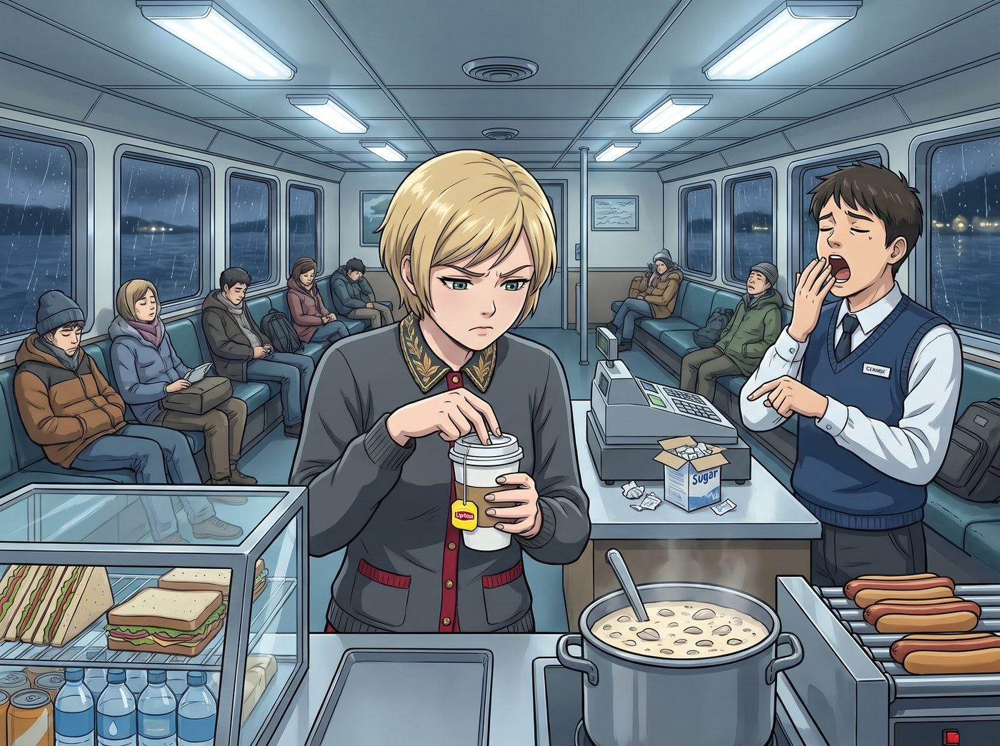

蛤蜊濃湯與蝦仁滑蛋

一、立頓
華盛頓州立渡輪的客艙，有一種極度務實的通勤感。
一排排乙烯基塑膠卡座，冷白色的日光燈，靠窗的位置坐滿了剛下班、一臉疲憊的通勤族。船艙中段有一個小小的餐飲吧台：玻璃冰櫃裡擺著三明治和瓶裝水，保溫鍋裡是蛤蜊濃湯，旁邊一台熱狗滾輪慢悠悠地轉著。收銀機後面站著一個大學生，正在打一個很長的哈欠。
Victoria 低頭看著手裡紙杯上垂下來的那張黃色立頓標籤，眉頭抽了一下。
「這就是熱茶？」她用兩根手指捏著杯緣，「沒有伯爵，沒有大吉嶺。就只是一包泡在滾水裡的黃色小紙袋。」
「要糖包嗎？」大學生面無表情地指了指旁邊一盒皺巴巴的糖包。
Victoria 深吸一口氣，決定為了 Chase 家的體面，不跟一個大學生爭論茶葉產地。她付了錢，走向靠窗的卡座。
窗外已經全黑了。海面什麼都看不見，玻璃窗變成了一面鏡子，映著船艙裡的日光燈，和坐在對面的兩個人。
Victoria 一坐下，幾乎是出於肌肉記憶，就掏出了手機，點開一個巴黎設計師的私人預覽頁面。Kate 沒有拿手機，只是捧著紙杯，看著窗上的倒影。
「那是一件斗篷嗎？」
Victoria 的手指停了。她抬起頭，發現 Kate 正好奇地看著她的螢幕——上面是一個模特兒，穿著一件結構誇張到幾乎像建築物的不對稱黑色外套。
「這叫解構主義剪裁，Marsh。」Victoria 下意識帶上了一點說教的語氣，把螢幕往 Kate 那邊斜了斜，「設計師故意破壞傳統的肩線和下擺，探討布料和人體之間的空間。」她停了一下，「不過這個笨蛋把配重搞砸了。模特兒走起來，像一隻右半邊中風的蝙蝠。」
Kate 端詳了一會兒，輕輕笑了。
「我剛才在想，」她說，「如果穿著這件去沃爾瑪買睡袋，會不會卡在貨架中間。」
Victoria 愣住了。
她腦子裡瞬間浮現出那個畫面：巴黎最新一季的解構主義高訂，在一整排螢光橘色的睡袋之間艱難地側身移動，最後被自己的下擺絆倒在特價區。
她死死咬住下唇，想把那聲笑憋回去，失敗了。一聲短促的、帶著鼻音的笑漏了出來。
然後她按下手機的鎖定鍵，把手機翻過來，扣在桌面上。
「所以，」她雙手交疊，身體往前傾了一點，「妳剛才抱著的那本童書，講的是什麼？別告訴我是『只要善良就能拯救世界』那種。我今天在那個社工面前，已經用掉一整年份的善良配額了。」
「不是拯救世界。」Kate 用指尖敲了敲紙杯，「是一個很挑剔的公主，最後發現自己其實很喜歡在下雨天踩水坑。」她頓了頓，「我覺得妳可能會有共鳴。」
二、滾輪熱狗
就在這時候，一陣狂風猛地撞上了渡輪的鋼鐵外殼。
緊接著，像是天上有人拉開了一道水閘，雨水變成一整面灰白色的牆，狠狠地砸在客艙的玻璃上。船身晃了一下，頭頂的廣播響起船長帶著雜音的聲音：因為強風，本班次延後開航，請旅客留在客艙內。
然後，一個非常不名媛、完全不受大腦控制的聲音，從她的羊絨大衣底下傳了出來。
她的肚子叫了。
Kate 眨了眨眼，目光從窗外收回來，落在 Victoria 微微僵硬的肩膀上。她什麼也沒說，只是嘴角往上翹了一點。
「別用那種眼神看我，Marsh。」Victoria 閉上眼睛，「我的新陳代謝只是在如實反映這悲慘的一天。」
她站起來，帶著一種走上斷頭台的悲壯，走向了剛才被她貶得一文不值的吧台。
五分鐘後，她端著一個橘色的塑膠托盤回來。托盤上有兩碗裝在紙碗裡的蛤蜊濃湯、幾包蘇打餅乾，和一根在滾輪上不知道轉了幾個小時、外皮已經微微起皺的熱狗。
「這是我這輩子刷過最屈辱的一筆帳。」她把托盤放在桌上，「黑卡碰到那台油膩刷卡機的時候，我好像聽見了 Chase 家列祖列宗在嘆氣。」
Kate 拿起一包蘇打餅乾，捏碎了撒進濃湯裡，舀了一口。
「其實還不錯。」她說，「這種天氣能喝到熱湯，已經很幸福了。」
Victoria 盯著面前那碗可疑的白色糊狀物，用兩根手指捏著塑膠湯匙攪了兩下，終於鼓起勇氣舀了一小口。
她的眉頭立刻擰成一團。
「這不是蛤蜊濃湯。」她抓起立頓紅茶灌了一大口，「這是一碗加了馬鈴薯的液態鹽。還有這塊蛤蜊肉——」她用湯匙撥了一下，「口感像在嚼一塊泡過海水的橡皮擦。這隻蛤蜊死得毫無尊嚴。」
但她沒有放下湯匙。
三、二號車廂
與此同時，奧林匹亞半島。
二號車廂的鐵皮屋頂被暴雨砸得噼啪作響。Max 盤腿坐在沙發上，看著手機，噗哧一聲笑了出來。
「Kate 傳訊息來，說渡輪因為強風延後開航。」她說，「她們被困在船艙裡。Victoria 正在吃滾輪熱狗和蛤蜊濃湯。」
「我願意出五十塊買一張大小姐現在的臉。」Chloe 大笑著站起來，拉開廚房的儲物櫃，「不過這代表今晚沒有 Kate 的晚餐了。Max，妳要吃什麼？我們有起司通心粉，或者——加了雙倍培根的起司通心粉。」
「雙倍培根。」Max 毫不猶豫地舉手，眼睛都亮了。兩隻浣熊正準備開工，一隻手從旁邊伸過來，輕輕把儲物櫃的門推上了。
是 Lily。她不知道什麼時候已經闔上了筆電，正在把襯衫袖子往上捲。
「這週的鈉攝取量已經超標了，Chloe 學姐。」她說，「請把餐桌清出來。給我二十分鐘。」
Chloe 和 Max 面面相覷，臉色同時白了一點。
她們當然知道 Lily 會做飯。自從廚房變成 Kate 的地盤以後，Lily 就很少下廚了，但她上一次認真掌勺的那個晚上，兩個人到現在都還記得：一鍋熬了六個小時、好喝到讓人說不出話的蓮藕豬骨湯，以及緊跟在後面的那一盤——
「……不會又是苦瓜吧？」Max 小心翼翼地問，身體已經本能地往後退了半步。
「老娘現在就可以去五金行買螺絲。」Chloe 說。
「今天沒有苦瓜。」Lily 從冷凍庫裡拿出一包好市多的急凍蝦仁，泡進水盆裡解凍，「冰箱裡沒有。而且外面在下暴雨，五金行已經關門了。」
兩個人對看了一眼，謹慎地留了下來。
接下來的二十分鐘，Chloe 和 Max 靠在流理台邊，看著 Lily 做了一場高精度的實驗。旁邊一口深鍋裡，薑絲肉片菜心已經滾成了一鍋清湯。
真正的重頭戲在旁邊的平底鍋。
Lily 往鍋裡倒了多到讓人心驚肉跳的油。
「呃，Lily，」Chloe 說，「妳是在炒菜，還是在幫我的猛禽換機油？」
Lily 沒有回答。她把擦乾的蝦仁滑進熱油裡，大火炒到剛變色就撈出來，直接倒進旁邊打散的六顆蛋液裡。鍋子擦乾，重新燒熱，再倒一次油。等油面冒起一絲輕煙，整碗混著蝦仁的蛋液傾倒下去——
「刺啦」一聲，蛋液邊緣瞬間膨起一圈金黃色的泡。
Lily 手裡的鍋鏟只往中心推了四五下。蛋液表面還有將近一半是濕的、在流動的。
然後她關了火，手腕一翻，把整鍋東西滑進了盤子裡。
「等等等等！」Chloe 指著盤子，「那還是生的！我們會得沙門氏菌！」
「請看。」Lily 說。
她把盤子放在桌上，轉身去炒最後一盤蒜蓉菜心。
就在這十幾秒裡，盤子裡那些還在微微流動的蛋液，靠著熱油和瓷盤的餘溫，一點一點凝結成了一層絲綢一樣發亮的鵝黃色，粉紅色的蝦仁嵌在裡面，邊緣還在輕輕冒著熱氣。
「如果等到在鍋裡全熟才起鍋，」Lily 把菜心端上桌，「蛋白質會過度凝固，口感就會老得像……」她想了一下，「像 Victoria 學姐現在在吃的那塊蛤蜊。」
蝦仁滑蛋，蒜蓉菜心，一碟用老抽和冰糖收汁的煎豆腐，一鍋薑絲肉片滾湯。前後不到二十五分鐘。
Chloe 叉起一塊裹著蛋的蝦仁放進嘴裡。
下一秒，她的眼睛睜大了。
那蛋嫩得幾乎不用咀嚼，順著舌頭就滑了下去，蛋香、油香和蝦仁的脆口一起在嘴裡炸開。跟她這輩子吃過的任何一盤美式炒蛋，根本不是同一個次元的東西。
「Holy shit……」她含糊地罵了一聲，叉子已經伸向了菜心，「這是什麼巫術？妳在裡面加了什麼？」
「鹽，和油。」Lily 說，「主要是油。」
Max 喝了一口湯，溫熱的湯順著喉嚨滑下去，把窗外暴雨帶進來的寒氣一下子驅散了。她放下湯匙，看著 Lily 的眼神裡，第一次完全沒有對苦瓜的戒備。
「那只是最基本的家常菜。」Lily 慢條斯理地夾了一塊豆腐。
Max 掏出手機，對著那盤已經被 Chloe 消滅了三分之一的蝦仁滑蛋，拍了一張特寫。
「妳要幹嘛？」Chloe 嘴裡塞得鼓鼓的。
「給被困在渡輪上的某人一點精神支持。」Max 露出一個帶著點小惡魔的笑容，按下傳送，「附言：『祝妳的滾輪熱狗用餐愉快。』」
四、不羨慕
渡輪上，Victoria 的手機在塑膠桌面上亮了起來，響了兩聲。
她正捏著那根表皮起皺的熱狗，認真考慮要不要為了生存再咬第二口。她順手滑開螢幕。
二號車廂溫暖的燈光下，一盤剛起鍋的蝦仁滑蛋，鵝黃的蛋液泛著油亮的光，粉嫩的蝦仁半埋其中，旁邊是翠綠的菜心和一碗冒著熱氣的清湯。
下面一行字：祝妳的滾輪熱狗用餐愉快。
Victoria 看著那盤滑蛋，再低頭看看自己面前那碗已經結了一層白膜的濃湯，和手裡那根像風乾標本一樣的熱狗。
她的表情扭曲了整整一秒。
「怎麼了？」Kate 注意到她周圍的氣壓驟降，探過頭來，「營地那邊傳訊息嗎？」
Victoria 在零點一秒內收回了表情，重新掛上那副無懈可擊的冷漠。
「沒什麼。Caulfield 的無聊炫耀。」她把手機往桌上一放，端起立頓紅茶喝了一口，「Lily 給她們隨便弄了點亞洲家常菜。妳知道的，那種高油、高膽固醇、毫無擺盤美學可言的炒蛋。」她頓了頓，又仔細看了一眼照片，確認盤子裡沒有任何綠色的、表面有顆粒的東西，「……至少這次不是那個化學武器。」
Kate 低頭看了一眼螢幕，眼睛一下子亮了：「哇，這蛋看起來好滑！Lily 好久沒下廚了。」
「那只是因為放了過量的油，Marsh。」Victoria 雙手抱胸，下巴微揚，語氣酸得可以直接拿去醃黃瓜，「一個碳水加油脂的炸彈而已。我一點都不羨慕。真的。誰會在晚上八點把那麼多油往肚子裡塞？對皮膚簡直是災難。」
話音剛落，她的肚子極不給面子地，又發出了一聲悠長而空洞的轟鳴。
卡座裡安靜了。只有暴雨打在玻璃上的聲音。
Kate 眨了眨眼，非常體貼地移開視線，假裝什麼都沒聽到。她從帆布包裡翻出一小包還沒拆封的杏仁，悄悄推到 Victoria 面前。
「我想也是。」她溫柔地順著說，眼底全是笑意，「那種菜看起來很容易吃撐。不過在開船之前，我們還是先補充一點健康的油脂吧，Chase 小姐？」
Victoria 盯著那包杏仁看了兩秒，然後一把抓過來，撕開。
「……如果妳敢把剛才聽到的聲音告訴 Price，」她說，「我就把妳那些童書，全部換成財經雜誌。」
五、米色毛衣
風勢稍微減弱了。廣播裡傳來船長的聲音：二十分鐘後開航。
Victoria 嚼著杏仁，目光百無聊賴地掃過周圍的卡座，開始了今晚的第二輪毒舌。第一輪的受害者是那隻蛤蜊。
「左邊那個男人頭上的 Carhartt 毛帽。」她壓低聲音，「Price 也有一頂一模一樣的。她以為自己戴起來像個反體制的油漬搖滾明星，實際上看起來就像剛修完下水道。」
「可是那種帽子真的很保暖。」Kate 說，「Chloe 上次在鋼棚修車，戴了一整天呢。」
「還有 Lily。」Victoria 自動忽略了辯護，語氣裡帶著一絲沒吃到蝦仁滑蛋的怨念，「她是另一個層次的災難。Costco 的 Kirkland 連帽衫，軟體公司免費送的馬克杯，然後跟妳討論性價比。在她的世界裡，只要參數達標，設計感這種東西可以直接從地球上抹除。」
然後她的目光，落回了對面的 Kate 身上。
Kate 今天穿著一件淡米色的粗針織開襟毛衣，袖口已經有點起球了。那是那種在 Target 或者教會義賣會上就能買到的衣服，版型毫無銳利度可言，甚至有一點鄉下味。
照 Victoria 平常的火力，這是下一個再明顯不過的靶子。
但她看著 Kate 把雙手縮在寬大的毛衣袖子裡、捧著紙杯對她笑的樣子，那些已經到了嘴邊的詞，好像撞上了一面看不見的牆，一個都沒說出來。
「……那我呢？」Kate 眨了眨眼，像是看穿了她的停頓，輕聲問，「我這件毛衣，還有我用了四年的帆布包，在 Chase 小姐眼裡，是哪一個等級的災難？」
Victoria 的喉嚨好像被杏仁卡住了。她迅速把視線移向窗外漆黑的海面，端起那杯早就涼了的立頓，喝了一口。
「妳那不叫災難，Marsh。」她的聲音低了一個八度，帶著一種很生硬的、強行挽尊的別扭，「妳那叫……田園復古。材質有待加強，但至少顏色乾淨，沒有那些愚蠢的大 Logo。」
她的手指在桌面上敲了兩下，又小聲補了一句：
「……而且這種米色，很襯妳的膚色。總之，跟 Price 她們那種亂穿完全是兩回事。」
Kate 看著她那張「這是客觀的美學分析，絕對不是偏心」的側臉，終於笑出了聲。
腳下傳來引擎低沉的轟鳴。船身輕輕一晃，渡輪終於緩緩駛離了碼頭。
Kate 從帆布包裡拿出一條格紋羊絨圍巾——去年聖誕節，有人把它匿名塞進了她掛在床頭的襪子裡，標籤早就被剪掉了——探過身，越過塑膠桌面，輕輕繞在 Victoria 的脖子上。
「謝謝妳的客觀評價，Chase 小姐。」她幫她理了理圍巾的流蘇，聲音比船艙裡的暖氣還軟，「船開了。我們回家吧。」
Victoria 抬手按住脖子上那塊還帶著 Kate 體溫的布料。她張了張嘴，像是還想說兩句場面話，最後只是低下頭，輕輕「嗯」了一聲。